Вкладка Моделирование позволяет моделировать существующие компоненты, а также создавать новые компоненты.
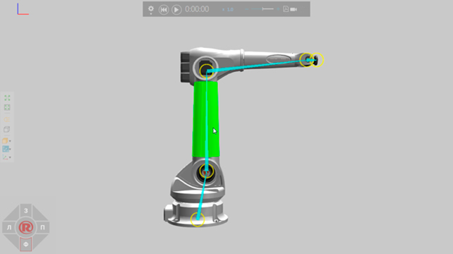
Для некоторых случаев вы можете импортировать САD-файл, который хотите смоделировать как компонент.
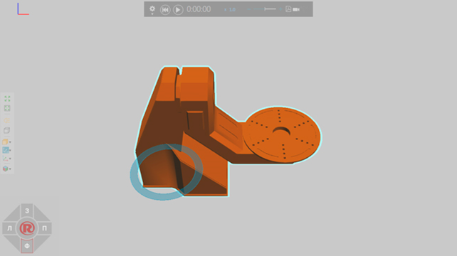
В других случаях можно использовать команды на ленте для создания компонента и новой геометрии.
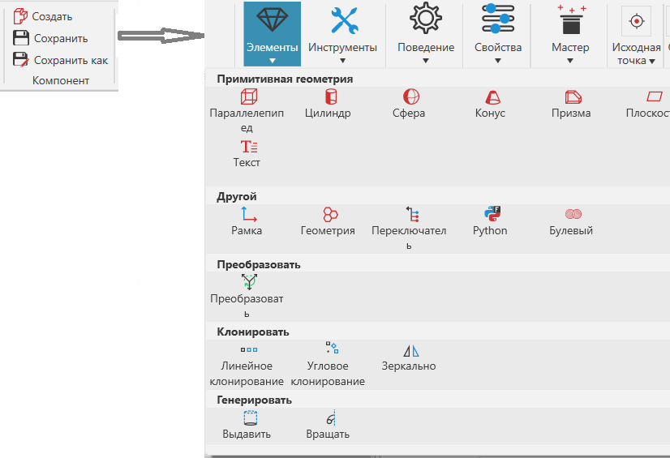
Если вы импортируете САD-файлы, мы настоятельно рекомендуем очистить и упростить геометрию САD-файла. Например, следует избегать файлов САD с большим количеством данных и внутренних частей, чтобы уменьшить размер файла и потребление памяти, а также повысить производительность. Как правило, вы можете упростить геометрию в редакторе, который вы использовали для создания САD-файла. Однако настройки импорта и другие параметры во вкладке Моделирование можно использовать для анализа и импорта САD-файла с использованием стандартных методов.
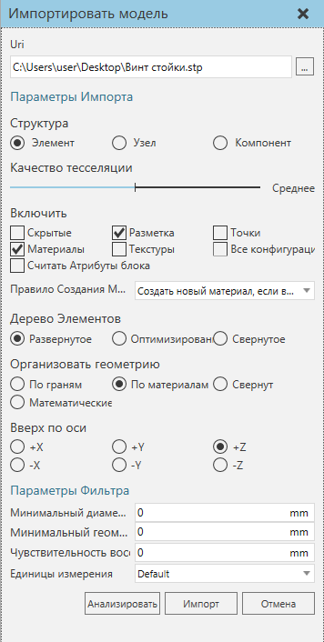
Как правило, импортированный САD-файл представляет собой однин компонент с одним узлом, который называется корневым узлом компонента. Структура данных компонента представляет собой дерево, поэтому у каждого компонента есть корневой узел.
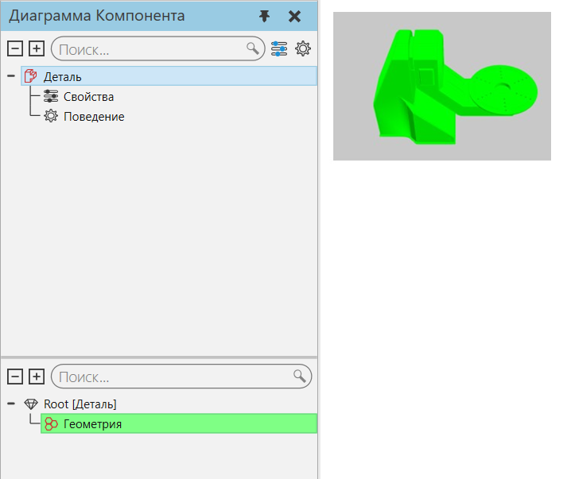
Если в компоненте должны быть подвижные части или кинематическая структура, вам потребуется создать новые узлы в компоненте.
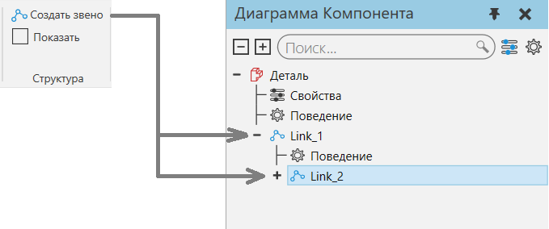
Эти типы узлов называются звеньями, и каждое звено содержит свойства для определения смещения, точки поворота, типа соединения и степеней свободы. То есть звено определяет свой механизм движения.
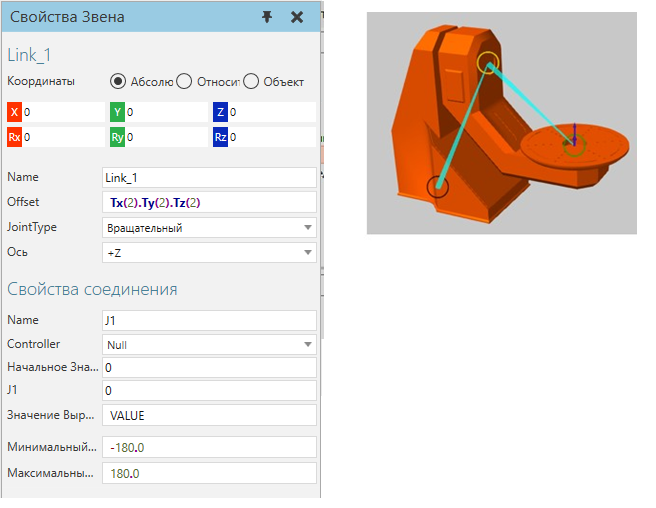
После того, как вы создадите необходимые узлы в компоненте, вам нужно будет переместить геометрию в эти узлы. Геометрия, которую вы импортируете или создаете в режиме моделирования, содержится в элементах.
Если вам нужно перегруппировать геометрию в объекте, то есть переместить некоторую геометрию в новый или другой объект:
·На ленте в группе Геометрия щелкните Инструменты и выберите из группы Инструменты элементов функцию Разделить.
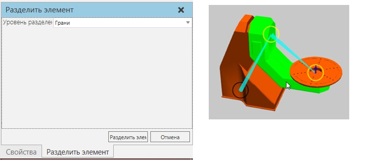
Если вы хотите разместить элемент в другом узле:
1.В Диаграмме Компонента на панели Дерево узлов компонентов выберите узел, содержащий элемент, который вы хотите разместить в другом месте компонента.
2.На панели Дерево элементов узла перетащите заданный элемент в заданный узел, указанный на панели Дерево узлов компонентов.
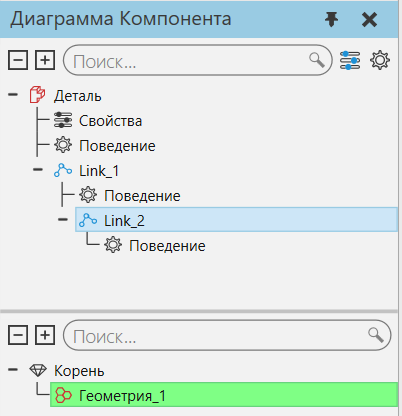
Подсказка: При перемещении узла или объекта на панели Диаграмма Компонента вы можете удерживать нажатой клавишу SHIFT, чтобы сохранить его положение в 3D-мире.
После того как вы определили узлы компонента и перегруппировали его элементы, вы можете создать свойства для компонента. Свойства компонента содержатся в корневом узле компонента и могут использоваться для управления значениями других свойств в компоненте, а также для параметризации компонента.
Свойства, которые вы создаете в компоненте, будут перечислены на панели Свойства Компонента, если только вы не сделаете свойство невидимым.
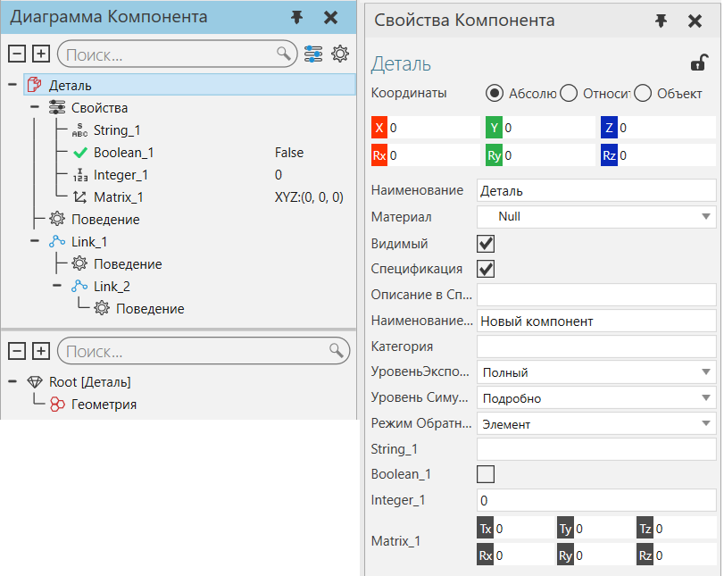
Свойство компонента имеет собственный набор свойств, которые можно видеть/задавать в области задач Свойства.
·На панели Диаграмма Компонента в области Дерево узлов компонентов выберите свойство, чтобы отобразить его свойства на панели задач Свойства.
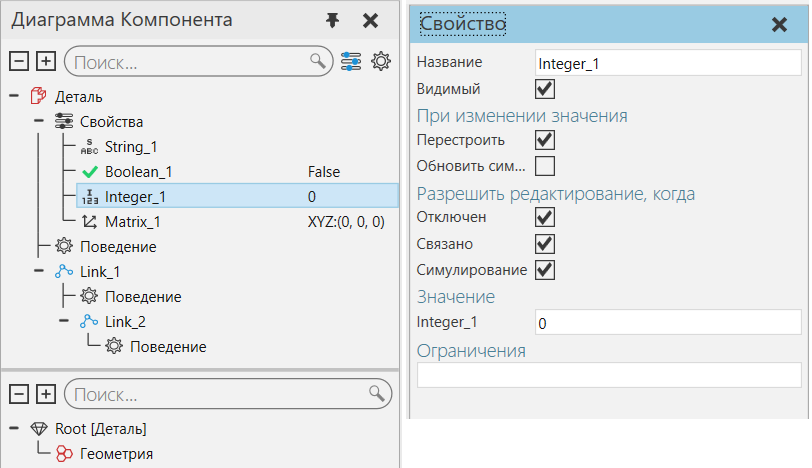
Если вы хотите, чтобы компонент выполнял задачи до начала или во время симуляции, задайте ему Поведение.
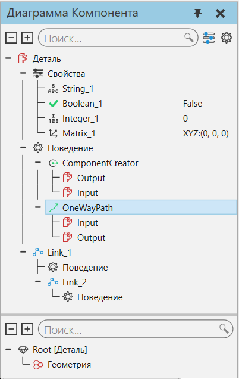
Некоторые типы поведения должны ссылаться на элементы и другие типы поведения для выполнения задач. Например, одностороння траектория (Односторонний Путь) ссылается на элементы локальной системы координат (Рамка) для определения и расчета траектории.
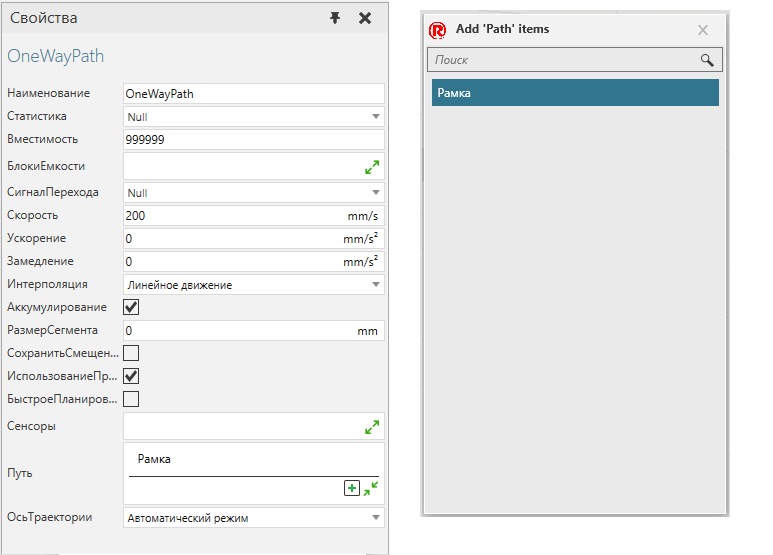
Поведения также могут быть связаны с поведениями в других компонентах. Например, интерфейс «Один к одному» позволяет подключить компонент к интерфейсу в другом компоненте, если интерфейсы совместимы.
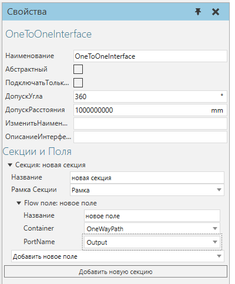
Если вы хотите написать код для компонента, вы можете использовать Python Script. Python позволяет использовать Python API, а также другие библиотеки и модули, доступные в Python 2.7. Скрипты Python можно использовать для написания логики компонента работающей до или во время симуляции, а также для разработки функций, управления трехмерным миром и разработки надстроек.

Чтобы сохранить компонент:
·На ленте в группе Компонент нажмите Сохранить / Сохранить как.
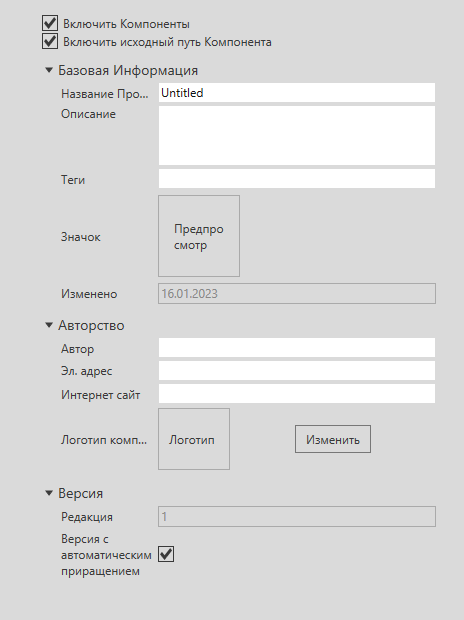